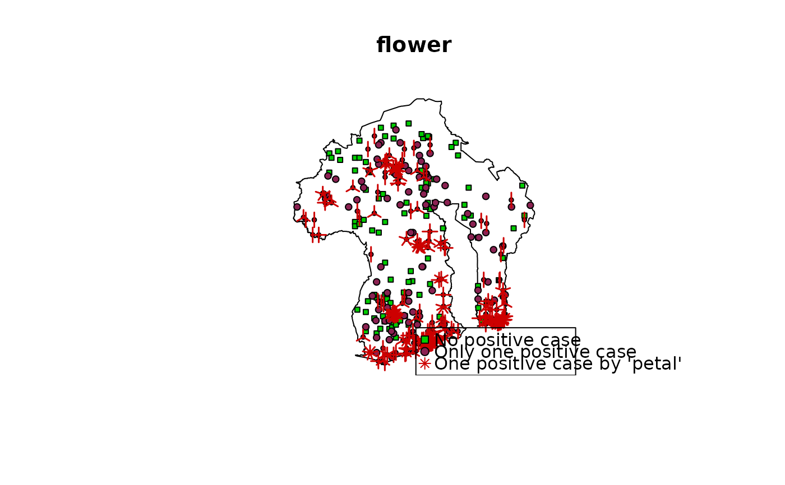

Method plot for object of class prevR.
Plot clusters, number of observations per cluster or number of positive cases per cluster.
# S4 method for prevR,missing plot( x, type = "position", add.legend = TRUE, legend.location = "bottomright", factor.size = 0.2, new.window = FALSE, axes = F, ... )
| x | object of class prevR. |
|---|---|
| type | graph to plot:
|
| add.legend | add a legend? |
| legend.location | legend location. |
| factor.size | scale factor of rings (for |
| new.window | plot in a new window? |
| axes | show axes? |
| ... | additional arguments transmitted to |
Available values for legend.location are: "bottomright", "bottom",
"bottomleft", "left", "topleft", "top", "topright",
"right" use "center".
Use main to define a title and sub for a subtitle
(see graphics::title()).
plot(fdhs, type = "c.type", main="c.type")plot(fdhs, type = "count", main="count", factor.size = 0.1)plot(fdhs, type = "flower", main="flower")